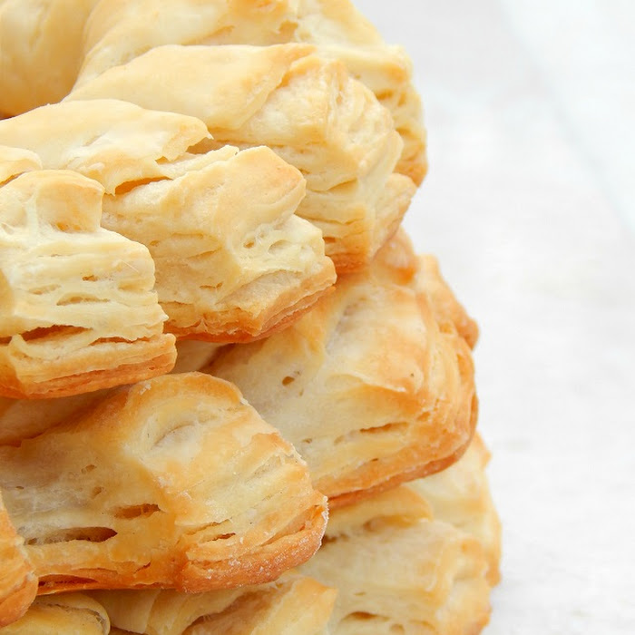
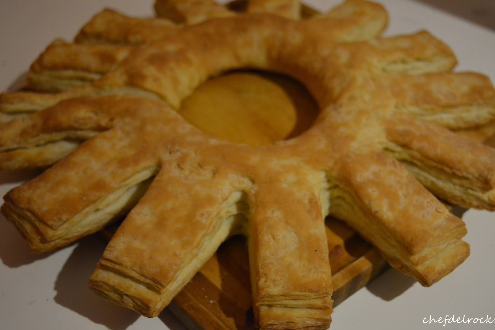

Como preparar una Rosca Cremona!

La rosca cremona es una de esas recetas que tengo muy cerca de mi corazon de pollo. Esta receta es una masa de hojaldre circular con brazos de hojaldre sobresaliendo pidiendo ser arrancados y sumergidos en salsa.
Dejando de lado esta descripcion innecesariamente grafica, los ingredientes que usaremos son:
- 1/2 kilo de harina
- 1 cucharada de sal
- 225 ml de agua, preferiblemente tibia
- 25 gr de levadura fresca y viva
- 200 gr de mantequilla
Preparacion
- Hacemos un volcan con la harina en un bol, y colocamos sal alrededor de esta, este detalle es importante.
- Coloca en el centro de esta la levadura, con la mitad del agua tibia, y comienza a amasar la masa hasta que esta quede homogenea.
- Una vez amasada, coloca harina en la mesa y con un rodillo forma un rectangulo en la mesa con la masa de al menos 10 mm de grosor
- Coloca la mantequilla en un rectangulo de proporcion menor dentro del rectangulo de masa, asegurate de que la mantequilla este compacta y dura
- Comienza a cubrir la mantequilla con la masa, enharina, dale la vuelta y comienza a expandir la masa hacia ambos lados de los extremos con la mantequilla dentro con el rodillo.
- haz un doblez simple (cubre el centro con ambos extremos), luego uno doble (deja el centro, cubre solo la mitad y dobla), repite este proceso 5 veces, siempre expandiendo la masa con el rodillo
- Al finalizar, une ambos extremos de la masa, haz incisiones del grosor de un dedo en el rollo. Hornea en una bandeja engrasada por 180 Celsius durante 30 minutos
Y listo! ese es el simple pero arduo proceso para preparar una rosca cremona. Indudablemente una de las mejores recetas para combinar con todo tipo de salsas y comidas. Dios por que escribo esto a las 3 AM sin comida al alcance, tengo hambre, me voy a resecar como una hojita si no como nada en las proximas horas. Franco fuera.

Volver al inicio.